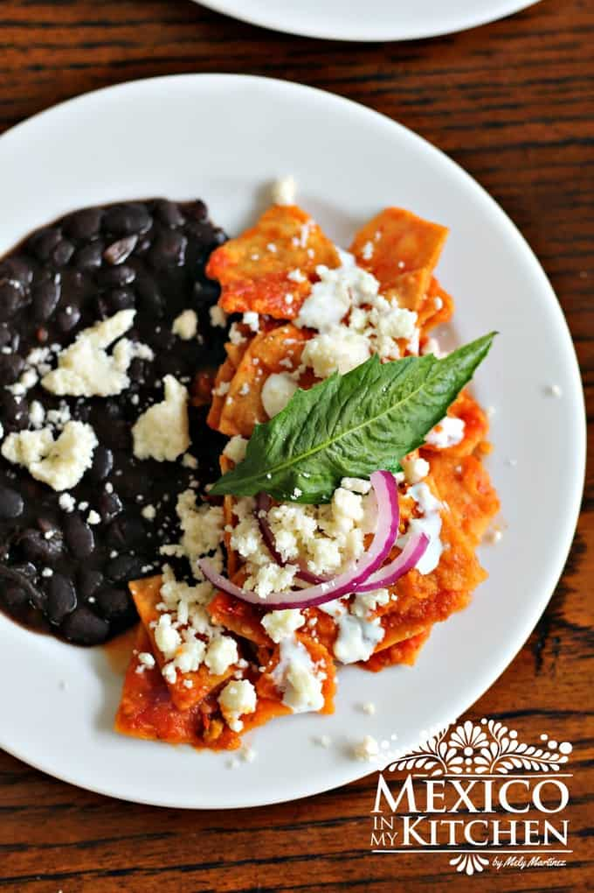

Mexican Chilaquiles

Description
What the heck are chilaquiles?
In case you don't know, these are a popular breakfast dish made with tortilla chips that bathe in salsa, topped with Mexican crumbled cheese and crema.
This dish is most commonly served with either a green or red salsa. This dish uses a delectable red salsa.
Ingredients
- 12 corn tortillas cut into six pieces each
- 2 cups red salsa
- ½ cup Mexican crema
- ½ crumbled Mexican cheese
- 1 sprig Epazote
- ⅓ cup cilantro, chopped
- ⅓ cup vegetable oil
- 2 slices onion
- Salt to season
- 1 & ½ cups chicken breast
Steps
- Heat 1 tablespoon of oil in a large skillet and start frying the tortillas until golden and crisp in batches. You might need to do 2 or 3 batches to avoid overcrowding the skillet. Drain the tortillas on paper towels. Repeat the process with the rest of the tortillas.
- Clean the skillet with a paper towel, turn the heat to medium and add 1 tablespoon of oil. Add the sauce and let it cook for 5 minutes. Add the Epazote and season the sauce with salt. Carefully stir in the tortillas to avoid breaking them. Add the chicken (if using) and coat it with the salsa. Cook for 2 more minutes.
- Serve garnished with crumbled cheese, cilantro, onion and topped with the cream. Serve with refried beans. Avocado is also a good addition to the plate.
Credit
This recipe is copied from Mexico In My Kitchen